Part A: IMAGE WARPING and MOSAICING
.
A.1 Shoot the Pictures
For this project, I captured three sets of images from the game Gujian 3 (古剑奇谭三), focusing on its three major city environments: Yanling (鄢陵), Yangping (阳平), and Tianlu City (天鹿城).
This game is well known for its richly detailed environments and traditional Chinese architectural aesthetics, making it a great source for scenes with clear geometric structure and consistent perspective cues.
Using in-game screenshots provides several practical advantages for this task:
- The camera center can be fixed precisely while rotating, ensuring pure projective (perspective) transformations without translation.
- Lighting and object motion can be frozen through in-game settings, eliminating temporal inconsistencies between images.
- The environments feature distinctive visual depth and texture, which improves feature detection and alignment quality.
Overall, these three scenes represent a range of architectural and environmental styles typical of the game’s world, while also satisfying the technical requirements for projective image mosaicking.
Yanling (鄢陵)
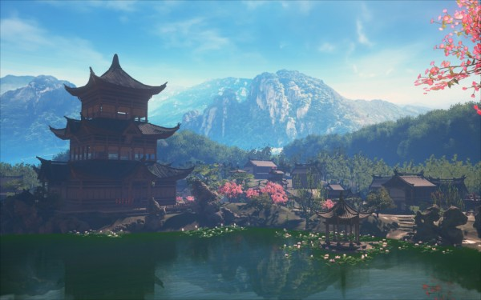
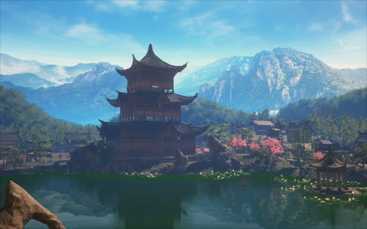
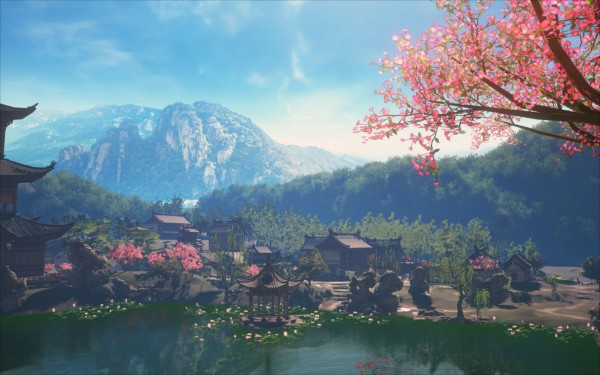
Yangping (阳平)
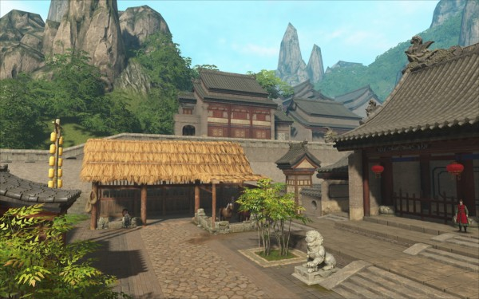
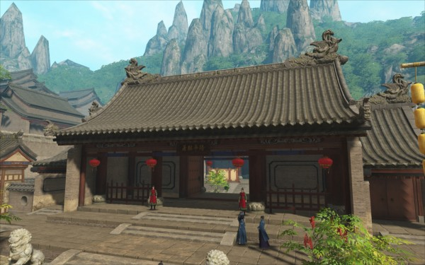
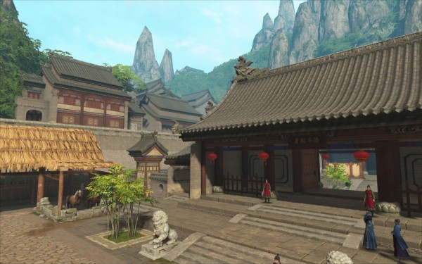
Tianlu City (天鹿城)
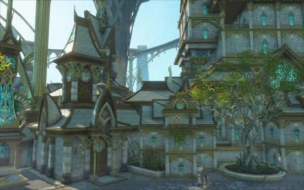
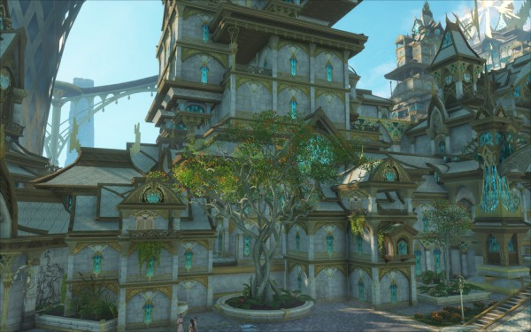
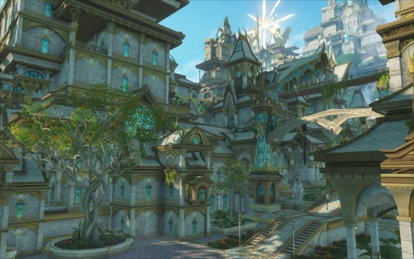
.
.
A.2 Recover Homographies
Before warping the images, I compute the projective transformation (homography) between each pair of images.
A homography defines a mapping between two planes and can be written as:
$$
p’ = H p
$$
where
$$
p =
\begin{bmatrix}
x \
y \
1
\end{bmatrix},
\quad
p’ =
\begin{bmatrix}
x’ \
y’ \
1
\end{bmatrix},
\quad
H =
\begin{bmatrix}
h_{11} & h_{12} & h_{13} \\
h_{21} & h_{22} & h_{23} \\
h_{31} & h_{32} & 1
\end{bmatrix}
$$
with matrix multiplication, we can get:
$$
\begin{cases}
x h_{11} + y h_{12} + h_{13} – x x’ h_{31} – y x’ h_{32} = x’ \\
x h_{21} + y h_{22} + h_{23} – x y’ h_{31} – y y’ h_{32} = y’
\end{cases}
$$
Since H has 8 degrees of freedom (the last entry can be fixed to 1), I rearrange the above into a linear system of the form
$$
A h = b
$$
where
$$
A =
\begin{bmatrix}
x & y & 1 & 0 & 0 & 0 & -x x’ & -y x’ \\
0 & 0 & 0 & x & y & 1 & -x y’ & -y y’
\end{bmatrix},
\quad
b =
\begin{bmatrix}
x’ \\
y’
\end{bmatrix}
$$
Here we have two equations, by selecting 4 correspondences for a pair of image, we can get the eight equations for solving H.
I manually selected 10 point correspondences for each image pair using matplotlib.ginput. With more than four points, the system Ah=b becomes overdetermined, and is therefore solved in the least-squares sense to minimize reprojection error:
$$
\min_h | A h – b |^2
$$
Below are some examples of the correspondences:
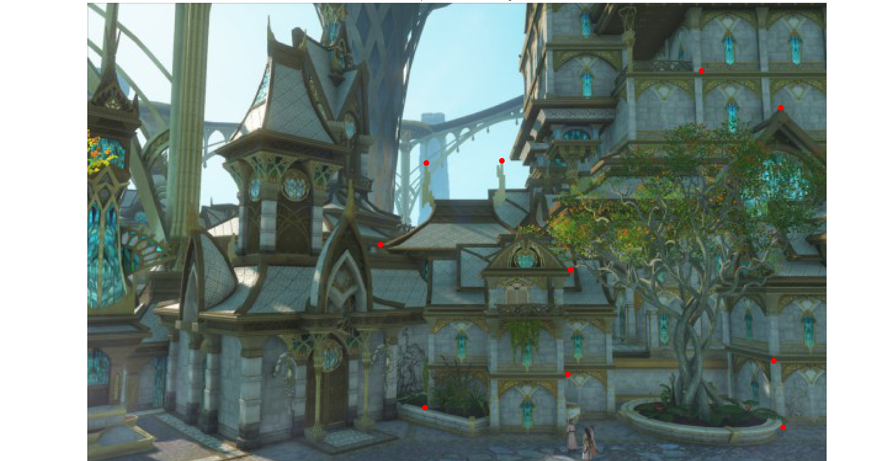
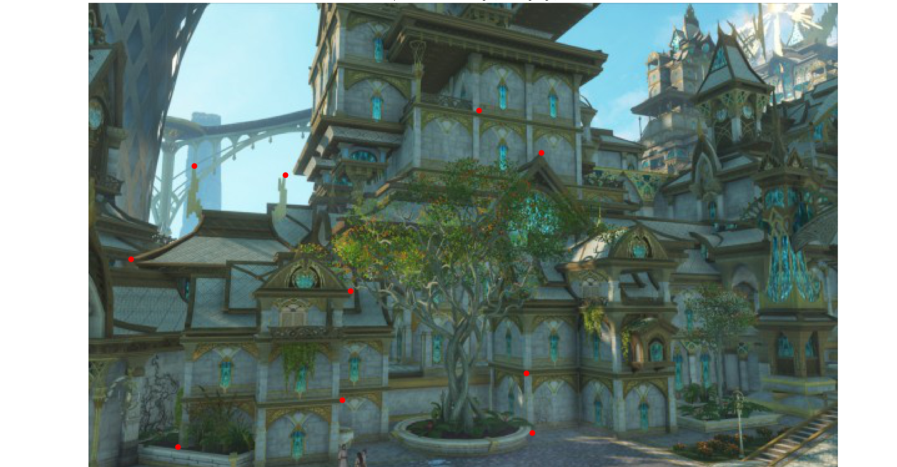
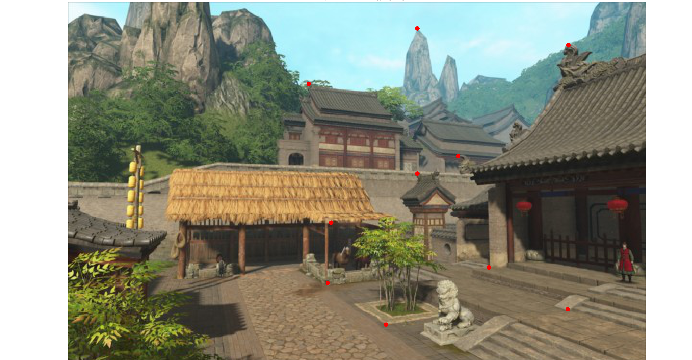
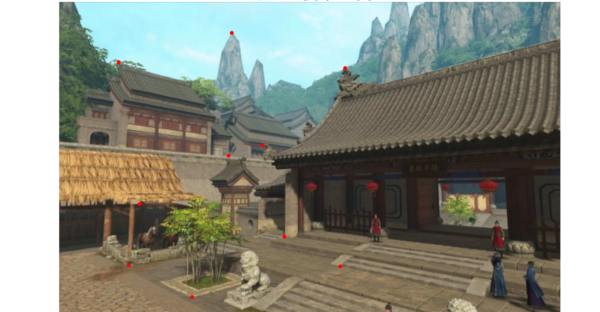
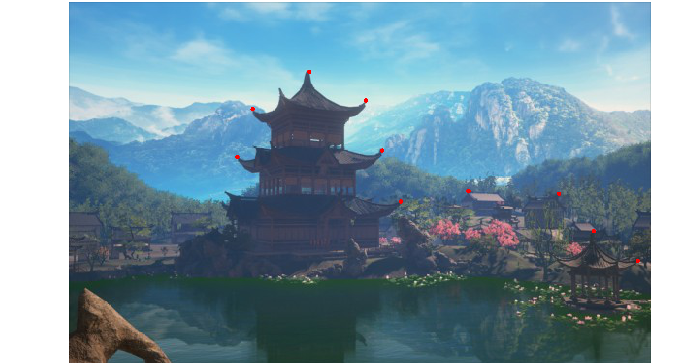
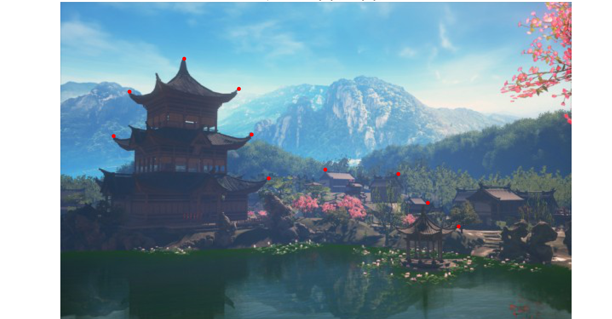
.
.
A.3 Warp the Images
Nearest Neighbor Interpolation
In this method, each pixel in the warped image is assigned the value of the nearest pixel from the source image.
Step 1: Calculate image boundaries and mesh grid
I first project the four image corners through 

np.meshgrid) in this range is created to represent each target pixel location.
Step 2: Inverse Mapping
The homography 


$$
p = H^{-1} p’
$$
Step 3 (Nearest neighbor): Rounding coordinates (nearest neighbor)
For each projected point, I normalize by the homogeneous coordinate and round the result to the nearest integer pixel location:
$$
x = \text{round}\left(\frac{x’}{w’}\right), \quad
y = \text{round}\left(\frac{y’}{w’}\right)
$$
Step 4: Create a mask to decide which coordinates are within the range
When performing inverse warping, some of the mapped coordinates 

Each pixel satisfies the following condition:
$$
\alpha = (x \ge 0) \land (x < w_{\text{original}}) \land (y \ge 0) \land (y < h_{\text{original}})
$$
Step 5: Assign the pixels
I first initialized a canvas with all 0 values (black), and then assigned the pixels back to their locations according to the mask:
$$
I'(x’, y’) =
\begin{cases}
I(x, y), & \text{if } \alpha(x’, y’) = 1 \\
0, & \text{otherwise}
\end{cases}
$$
.
Bilinear Interpolation
The process largely follows the same inverse mapping structure as the nearest neighbor method, but with continuous interpolation steps instead of rounding:
Step 3 (Bilinear): Finding all four neighbors
In this step, instead of rounding the coordinates, I found all four neighbors by computing 

The weights are determined by the pixel’s distance to each neighbor, and the four contributions are summed to produce the interpolated color value:
$$
I(x, y) =
(x_{\text{ceil}} – x)(y_{\text{ceil}} – y) I_{11} +
(x_{\text{ceil}} – x)(y – y_{\text{floor}}) I_{12} +
(x – x_{\text{floor}})(y_{\text{ceil}} – y) I_{21} +
(x – x_{\text{floor}})(y – y_{\text{floor}}) I_{22}
$$
This produces smoother results compared to nearest neighbor interpolation, though at a higher computational cost.
.
Below are several examples performing the two warping methods. As the image size is quite small (600 by 375 pixels), the differences between the two results is not obvious.
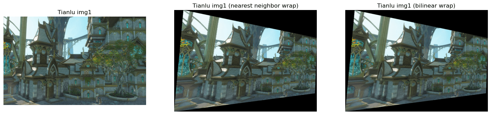
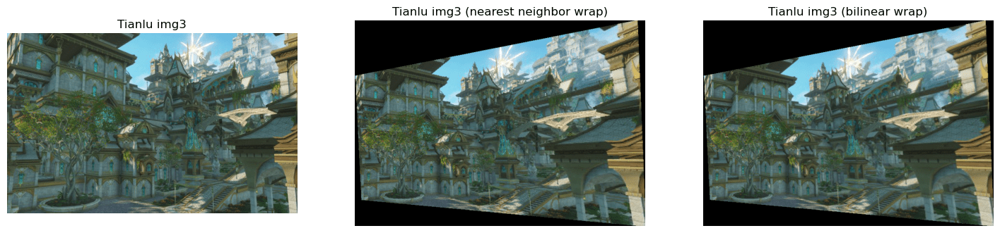
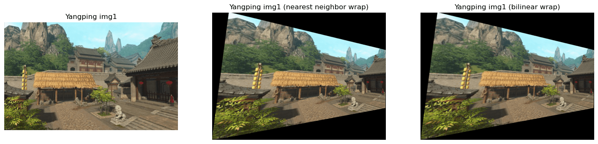
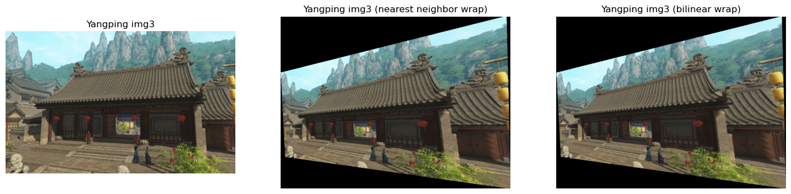
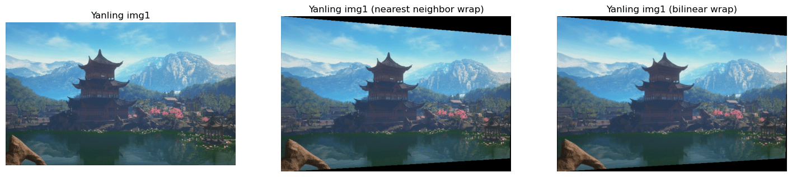
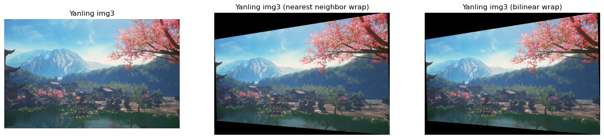
.
Rectification
With the warping function implemented, I first it on a single image. I selected a floor pattern from the game, as the texture and perspective details make it an ideal example for homography-based warping. To prepare the image, I cropped a portion of the scene to focus on the floor region and reduce unnecessary computation from surrounding objects. Then, I applied bilinear interpolation using the implemented warpImageBilinear() function to perform the perspective transformation.
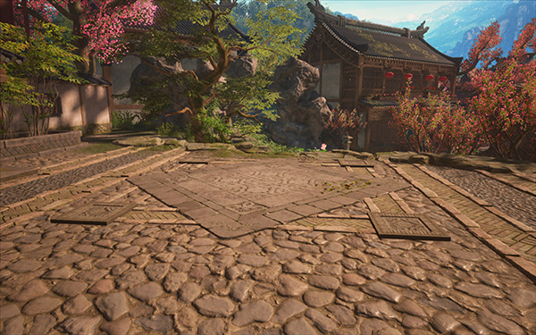
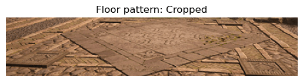
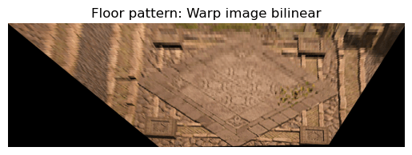
Here shows how to make a facade looks more “front”:
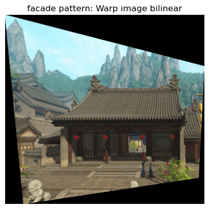
.
.
A.4: Blend the Images into a Mosaic
After warping the images into the same projection, the next step is to blend them smoothly into a single mosaic.
Directly overlaying one image on top of another would result in visible seams and hard boundaries.
To address this, I implemented a weighted averaging blending method that uses distance transform masks to achieve smooth transitions between overlapping regions.
The function allows three inputs: a list of images, a list of movements, and a list of masks. All the movements and masks can be returned from the warping step.
def multiple_blending(images, movements, alphas):Here I use the blending process of these two images as an illustration example:
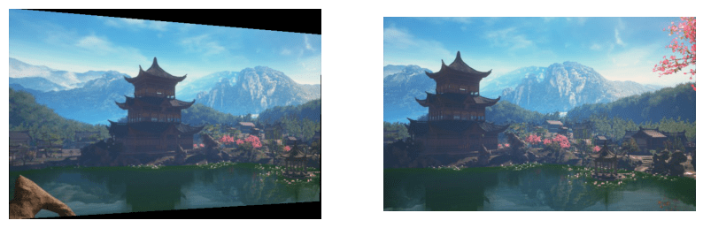
The steps of blending are as follows:
Step 1: Create the canvas
I first computed the overall bounding box of the final mosaic by checking the spatial extents of both warped images.
Then, a series of canvases were created with this final size, and the warped images were placed on them according to the relative displacement movements.
Step 2: Mask construction
For each image, I generated a binary mask representing the valid pixel regions of the image. The mask value is True for pixels that belong to the image and False for the empty regions. The mask is generated from the warping process.
These masks are essential for identifying where the two images overlap and where each image should contribute intensity values.
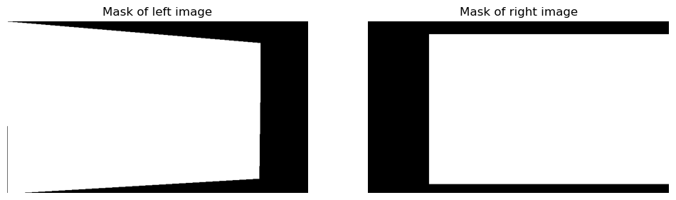
Step 3: Distance transform
Instead of using a hard binary boundary, I computed a distance transform on each mask using:
from scipy.ndimage import distance_transform_edtdist1=distance_transform_edt(mask)This operation assigns each pixel a value proportional to its distance from the nearest edge of the mask. Intuitively, pixels near the center of an image have a large distance value (strong confidence), while those near the edges have small distance values (weak confidence).
Step 4: Alpha Weight Computation
From these distance maps, I calculated a soft blending weight for each image:
$$
\alpha_1 = \frac{d_1^2}{d_1^2 + d_2^2 + \varepsilon},
\qquad
\alpha_2 = 1 – \alpha_1
$$
Step 5: Weighted blending
Finally, the two aligned images were blended using the computed alpha weights:
$$
I_{\text{blend}} = \alpha_1 I_1 + \alpha_2 I_2
$$
.
Note that in step 2, bringing in the alpha mask calculated from the warping process help reduces the feather looking when blending:
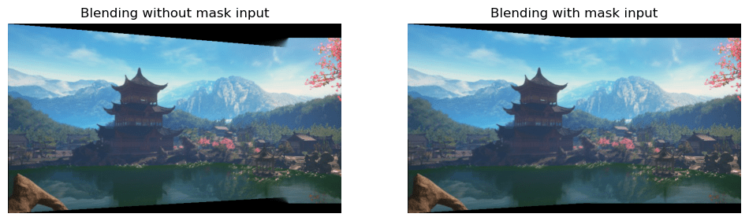
.
Results
Here are the final blended mosaics of the three cities from Gujian 3. They are perfectly blended!
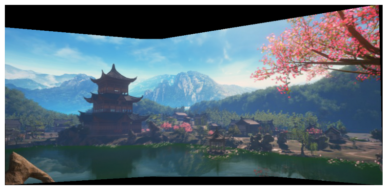
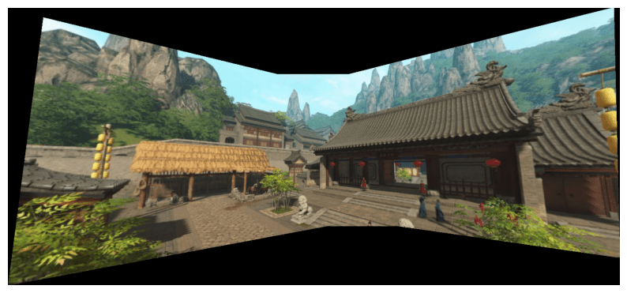
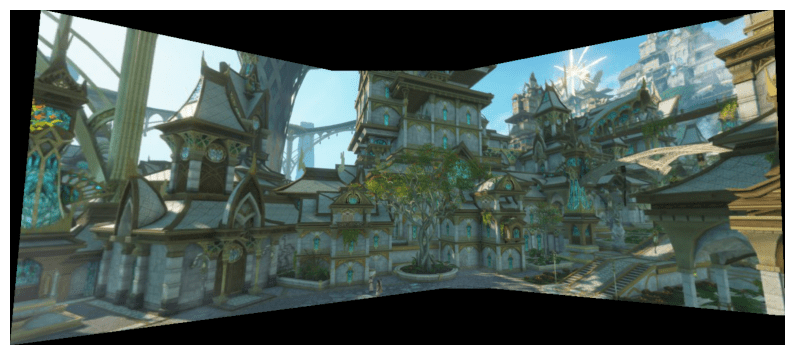
.
.
A.5: Bells & Whistles
Cylindrical Mapping
Instead of mapping each image directly onto a plane, this method projects every pixel onto the surface of a cylinder of radius equal to the focal length f, and then unwraps the cylinder onto a flat image.
Step 1: Normalize the coordinates
Each pixel
$$
X = \frac{x – c_x}{f}, \qquad Y = \frac{y – c_y}{f}
$$
Step 2: Project to the cylindrical surface
The mapping from image plane to cylinder is:
$$
x_c = f \tan(X), \qquad y_c = \frac{fY}{\cos(X)}
$$
This bends horizontal lines while preserving vertical ones, reducing distortion across wide mosaics.
Step 3: Inverse mapping for sampling
For each output pixel 
$$
x = f \arctan!\left(\frac{x_c}{f}\right) + c_x, \qquad
y = f \frac{y_c}{\sqrt{x_c^2 + f^2}} + c_y
$$
Step 4: Mask and assignment
This step is exactly the same as Steps 4 and 5 in part A.3 Warp the images.
.
Below shows the results. They present a stronger visual impact!
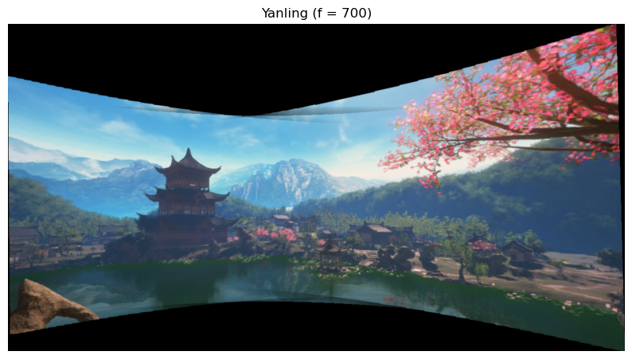
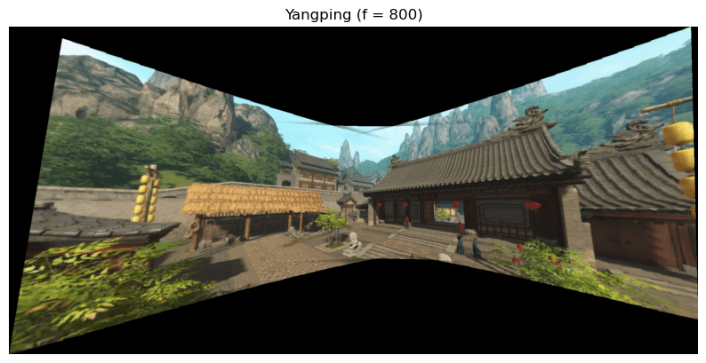
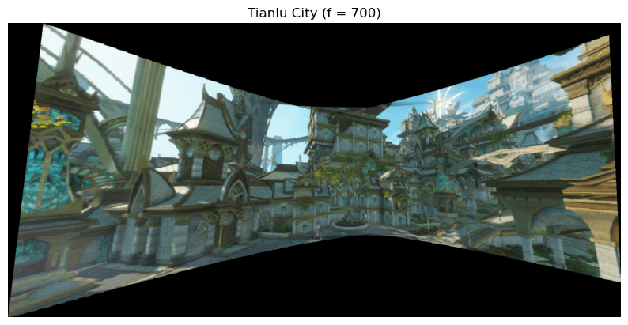
.
.
Part B: FEATURE MATCHING for AUTOSTITCHING
This part is for auto stitching the images together. This part follows the algorithm and parameter in the paper “Multi-Image Matching using Multi-Scale Oriented Patches“.
B.1 Harris Corner Detection
Harris Interest Point Detector
To detect feature points in an image, I first applied the Harris Corner Detector, which identifies locations with strong intensity variations in both x and y directions. These points are typically corners that are robust to translation and rotation.
The Harris response function is defined as:
$$
R = \frac{\det(M)}{\text{trace}(M)}
$$
where M is the second moment matrix at each pixel:
$$
M =
\begin{bmatrix}
I_x^2 & I_x I_y \\
I_x I_y & I_y^2
\end{bmatrix}
$$
and 

Pixels with a large R are considered good corner candidates.
I used the provided get_harris_corners() function to compute both the Harris response matrix h and the coordinates of the detected corners. Points that are close to the boundary are not taken into account to avoid window conflict in later steps. The corners are then overlaid on the original image for visualization:
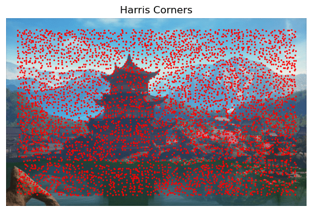
Adaptive Non-Maximal Suppression (ANMS)
While Harris corners indicate strong interest points, they tend to cluster densely in textured regions. Adaptive Non-Maximal Suppression (ANMS) helps spread the corners more evenly by selecting a subset of keypoints that are both strong and spatially well-distributed.
The idea is to assign each corner a suppression radius 

$$
r_i = \min_j |x_i – x_j| \quad \text{s.t.} \quad h_j > c_\text{robust} \cdot h_i
$$
where
is the Harris response of corner
,
is a robustness factor (here used 0.9).
After computing all 
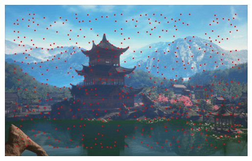
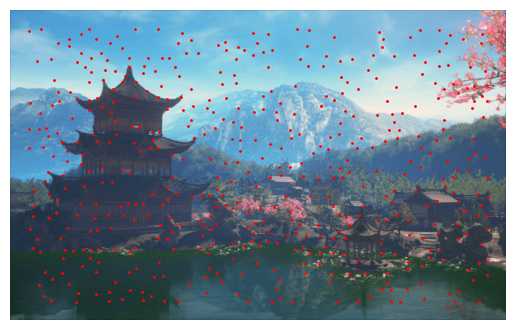
.
.
B.2 Feature Descriptor Extraction
After identifying a set of well-distributed corner points using Harris and ANMS, I extracted a feature descriptor for each corner to characterize its local appearance. Each descriptor is computed from a blurred 40×40 image patch, which is then subsampled to an 8×8 vector and bias/gain normalized.
The steps for each corner coordinate 
Step 1: Apply Gaussian smoothing to the image before sampling:
$$
I_\text{blurred} = I * G_\sigma
$$
where 

Step 2: Extract a 40×40 window centered at the corner.
Step 3: Subsample every 5 pixels to get an 8×8 patch.
Step 4: Normalize the descriptor to remove illumination bias:
$$
I’ = \frac{(I – \mu)}{\sigma + \epsilon}
$$
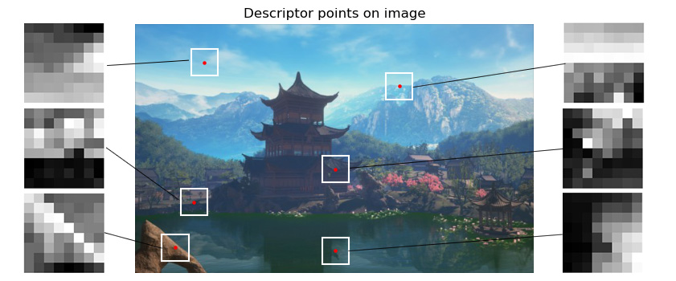
.
.
B.3 Feature Matching
After extracting 8×8 feature descriptors from both images, I implemented feature matching using Lowe’s ratio test to identify pairs of features that are most likely to correspond between two images.
For each descriptor 


$$
d_{ij} = | d_i – d_j |_2
$$
Lowe’s ratio test compares the distance of the closest match to the second-closest match:
$$
\text{ratio}_i = \frac{| d_i – d_j |_2}{| d_i – d_k |_2}
$$
Only matches that satisfy:
$$
\text{ratio}_i < T
$$
are retained, where T is the threshold (here picked 0.3).
This ensures that the best match is significantly better than the next candidate, reducing ambiguous correspondences.
Below shows three pairs of correspondences:
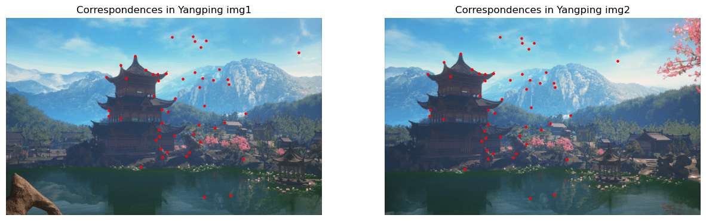
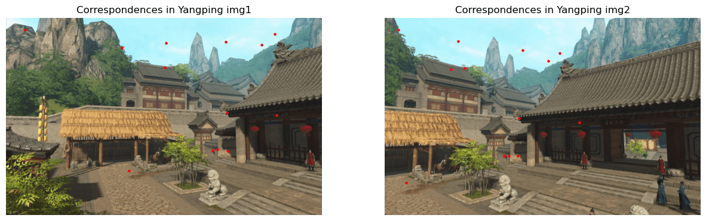
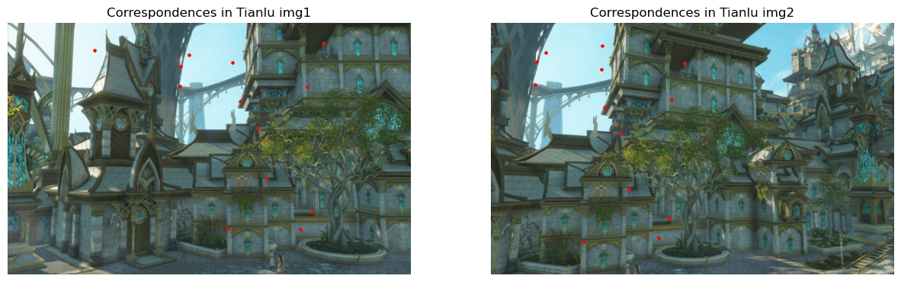
.
.
B.4 RANSAC for Robust Homography
RANSAC Algorithm
To achieve robust image alignment, I used a 4-point RANSAC scheme to estimate the homography between each image and the reference frame. This removes the influence of outlier matches that arise from false correspondences.
Step 1: Random sampling: pick 4 matching pairs.
Step 2: Estimate a temporary homography 
Step 3: Project all points from image 1 using
$$
\tilde{\mathbf{x}}’ = H_i\,\tilde{\mathbf{x}},\quad
\tilde{\mathbf{x}}’ \leftarrow
\frac{1}{\tilde{z}’}(\tilde{x}’,\tilde{y}’,1)
$$
Step 4: Count inliers whose reprojection error is within a tolerance 𝜏:
$$
| \mathbf{x’} – \tilde{\mathbf{x}}’ |_2 < \tau
$$
Below shows the result of auto warping (middle) and manual warping (right). They return almost the same result with slight differences:
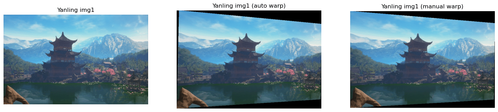
Blending
Then I used the same blending technique as part A.4 to all the blending images. Each blended images is generated from three screenshots of the city:
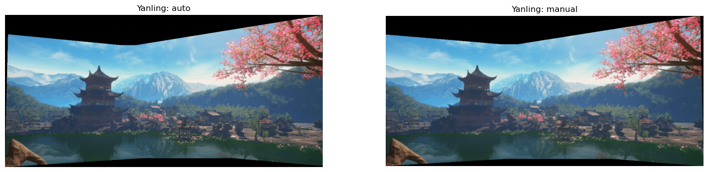
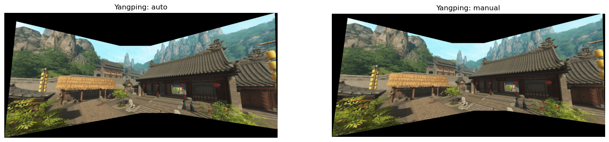
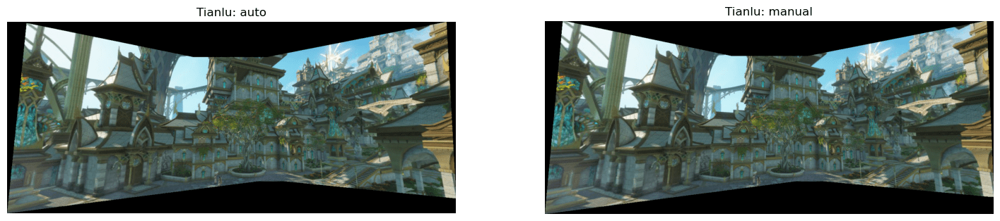
.
.
B.5 Bells & Whistles: Rotation Invariance
To make the feature descriptors robust to image rotation, I extended the previous axis-aligned implementation by aligning each patch according to its dominant gradient orientation. This ensures that the same physical corner produces similar descriptors even when the image is rotated.
Step 1: Extract a local window around the point (40×40 pixels).
Step 2: Compute image gradients in the x and y directions:
$$
G_x = \frac{\partial I}{\partial x}, \quad G_y = \frac{\partial I}{\partial y}
$$
Step 3: Estimate the dominant orientation from the summed gradient vectors:
$$
\theta = \arctan2!\left(\sum G_y,\, \sum G_x\right)
$$
Step 4: Rotate the patch by −θ so that the dominant direction is aligned horizontally.
Rotation is performed using the affine transform:
$$
M =
\begin{bmatrix}
\cos\theta & -\sin\theta & 0\\
\sin\theta & \cos\theta & 0
\end{bmatrix}
$$
Step 5: Subsample and normalize the rotated patch to obtain an 8×8 descriptor:
$$
D’ = \frac{D – \mu(D)}{\sigma(D) + \epsilon}
$$
Below shows some examples of random rotational descriptors in three different images:
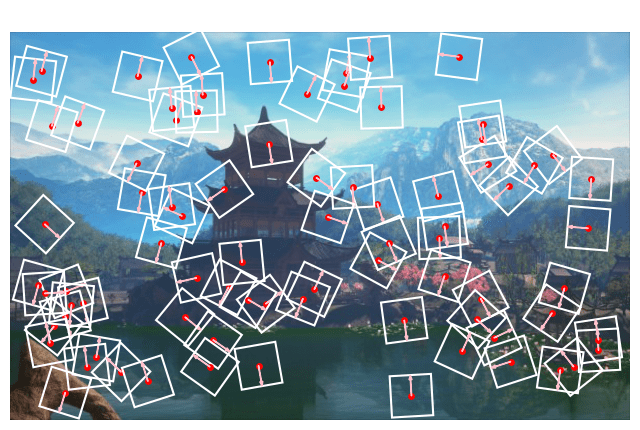
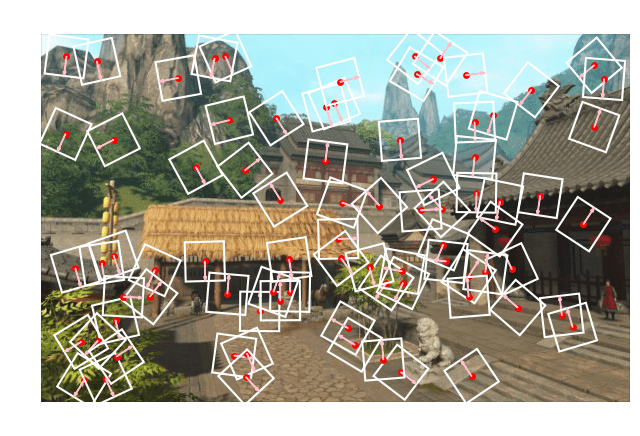
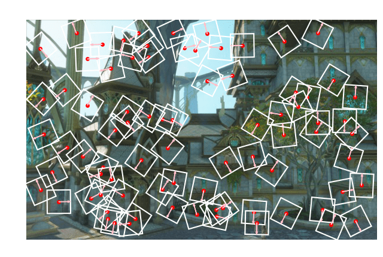
Below shows the best descriptors (Lowe’s ratio < 0.3) from the first image:
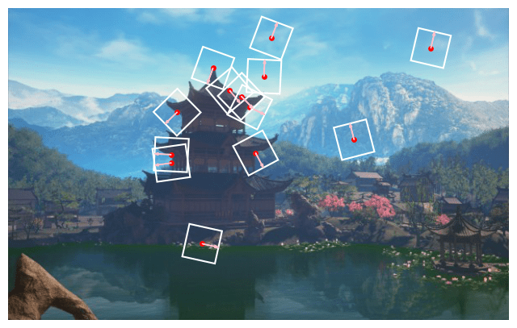
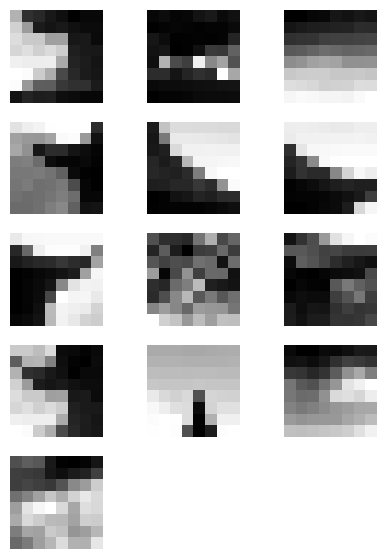
Final Results
Here are the final blending results. Each image is generated from three screenshot photos: